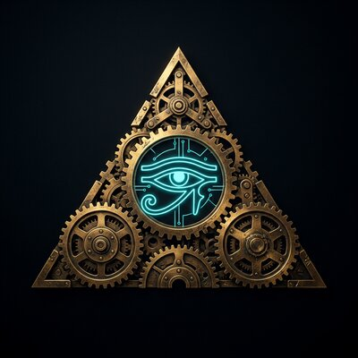

Ancient Machines
Evidence vs Theory
Cinematic documentaries on lost technology, ancient astronomy and the cosmos. Every episode separates what the evidence shows, what experts conclude, and what theories claim.
▶ Subscribe on YouTube Instagram · @ancientmachinesdoc X · @AncientMachDoc